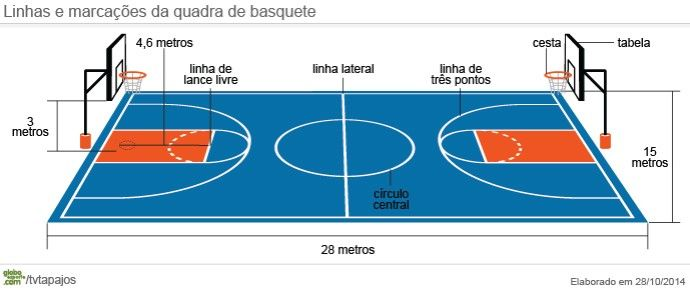
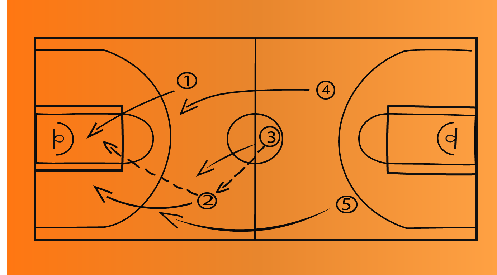

Serão exemplos dos fundamentos básicos do Basquetebol, discutidos e analisados neste texto: o passe de peito; o passe de peito picado; os passes de ombro (direito e esquerdo); o passe sobre a cabeça; os passes em profundidade (direito e esquerdo); os dribles (como o giro, o drible por trás do corpo e o drible entre as pernas); as bandejas (direita e esquerda) e os arremessos (de curta, média e longas distâncias).
-Os passes do Basquetebol se constituem na metodologia de envio da bola aos companheiros, na intenção de permitir a continuidade do jogo. Dividem-se em três tipos básicos: os de curta, os de média e o de longas distâncias (FERREIRA e DE ROSE JÚNIOR, 2003). Entre os de - curtas distâncias - estão o passe de peito; o de peito picado e o passe sobre a cabeça. Estes, são os que se apresentam como opção de - excelente precisão - e devem ser preferidos em momentos que se deseja assegurar a eficiência da transferência da bola a um companheiro, quer seja para que o mesmo finalize ou dê continuidade ao jogo. Em relação aos de - médias distâncias - a precisão começa a ficar preterida, e, portanto, deve-se observar, com mais ênfase, as variáveis que podem interferir no seu aproveitamento, a exemplo da possibilidade do defensor interceptá-lo, da velocidade e da força necessárias a serem empregadas na bola e da própria distância a ser coberta pelo passe. É exemplo: o passe de ombro, executado com o braço direito e/ou o esquerdo. E, por fim, aqueles tidos como de - longas distâncias - onde a precisão fica ainda mais preterida, a exemplo dos passes em profundidade. Estes devem ser preferidos em situações de contra-ataque ou quando se intenciona cobrir uma grande distância dentro da quadra, mas, devendo-se ter em mente a pouca eficiência que o mesmo agrega, no que diz respeito à recepção e a sua trajetória e etc. Sendo assim, para que o processo ensino/aprendizagem dos passes se inicie, deve-se, inicialmente, se levar em consideração um importante pré-requisito: a existência de uma “regra geral” para ensinamento de todos os tipos de passes. Sendo ela: Identificar se o aprendiz é “destro” ou “sinistro”, para que se possa, a partir disto, se estabelecer o seu “pé de apoio” ou o “pé de pivô”, que é o ponto de partida para a construção desse processo. Quando o aprendiz é destro, o seu pé de apoio será, sempre, o seu pé contrário, ou seja, o seu pé esquerdo, e, no caso de aprendizes sinistros, o seu pé de apoio deve ser, sempre, o seu pé direito (OLIVEIRA, 2012).
O basquete pode ser jogado numa quadra fechada (indoor) ou ao ar livre (outdoor). As dimensões da quadra são de 28 metros de comprimento por 15 metros de largura. O tamanho mínimo fica entre 26 metros de cumprimento por 14 metros de largura.
A maioria dos atletas sonha em ser o cestinha de um jogo e levar seu time ao título do campeonato. Porém as táticas de defesa no basquete têm uma grande relevância nas partidas, pois permitem que a equipe sofra menos pontos e tenha maior capacidade de fazer a diferença no outro lado da quadra. Jogadores como Michael Jordan e LeBron James são mundialmente conhecidos pela sua capacidade de marcar pontos. No entanto o que nem sempre é ressaltado é a qualidade defensiva desses atletas, que faz a diferença na marcação individual e na organização da equipe.
